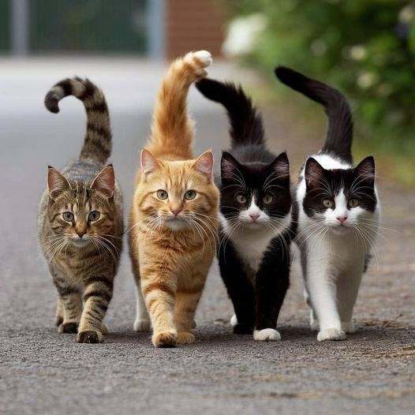
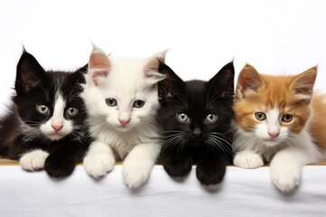

Descrição de gatos adultos e gatos pequenos
-Tigre (listrado) Tigre é um gato majestoso com uma pelagem listrada que remete à força e beleza dos grandes felinos. Com 4 anos, ele é um verdadeiro explorador, sempre curioso sobre o mundo ao seu redor. Tigre é calmo e protetor, fazendo dele o companheiro perfeito para momentos tranquilos em casa.
-Taco (laranja) Taco é um gato vibrante e divertido, com uma pelagem laranja brilhante. Ele pode ser muito carinhoso e afetuoso, mas de repente se transforma em uma explosão de diversão e brincadeira, trazendo o sabor apimentado de um taco para a casa! Com 3 anos, Taco adora correr pela casa em busca de novas aventuras e interagir com todos ao seu redor, garantindo risadas e alegria.
-Avogato (bicolor, mais preto) Avogato é um gato bicolor com mais preto e menos branco, o que lhe confere um ar sofisticado e intrigante. Com 2 anos, ele tem uma personalidade tranquila e afetuosa, adorando passar tempo com seus amigos felinos. Avogato traz um toque divertido à casa, sempre pronto para surpreender com suas travessuras.
-Sushi (bicolor, mais branco com preto) Sushi é um gato encantador que veio do Japão. Com uma pelagem predominantemente branca e manchas pretas que lembram as elegantes caixas de sushi, ele é uma verdadeira obra-prima felina. Com 2 anos, Sushi adora brincar com pequenos brinquedos que imitam sushi ou peixes e é conhecido por sua natureza carinhosa, sempre se aninhando nas pernas das pessoas.
-Laura, a Princesa (Gatinha Branca com Manchas Pretas) Laura é uma gatinha branca com lindas manchas pretas que a tornam única. Com cerca de 2 anos, ela é uma verdadeira princesinha: adora ser mimada e receber carinho. Laura é calma e tranquila, perfeita para quem busca uma companhia serena. Ela gosta de observar a movimentação pela janela e adora se aninhar em cobertores macios. Ela está à procura de um lar onde possa ser tratada como a realeza que é!
-Valente, a Resiliente (Gatinha Branca) Valente é uma gatinha branca com um olhar gentil e sábio. Com cerca de 3 anos, ela já passou por muitas dificuldades na vida, mas nunca perdeu a esperança. Valente uma personalidade doce e tranquila; ela adora relaxar em lugares ensolarados e observar o mundo ao seu redor. Apesar das dificuldades que enfrentou, ela é incrivelmente amorosa e grata por cada carinho recebido. Valente precisa de um lar calmo onde possa se sentir segura e amada, longe do estresse da rua.
-Zé Pinguim, o Gato Preto (Gatinho Preto com Olhos Amarelos) Zé Pinguim é um gatinho preto charmoso com olhos amarelos que parecem brilhar à noite. Ele tem aproximadamente 1 anos e é muito sociável, sempre pronto para fazer novos amigos. Zé Pinguim é divertido e adora brincar com outros gatos, mas também gosta de passar tempo com humanos. Ele tem uma personalidade carinhosa e frequentemente busca atenção, ronronando feliz quando recebe carinho. Zé Pinguim precisa de uma família que o acolha e que compartilhe momentos alegres com ele.
-Pudim, Aventureiro (Gatinho Laranja) Pudim é um gatinho laranja de pelos brilhantes e olhos verdes curiosos. Ele adora explorar novos lugares e se aventura pelo quintal em busca de insetos e folhas caídas. Pudim tem cerca de 1 ano e é muito brincalhão, sempre pronto para correr atrás de bolinhas de papel ou brincar com cordas. Embora seja um gato independente, ele também adora receber carinho e se aconchegar no colo após um dia cheio de aventuras. Pudim precisa de um lar onde possa ter espaço para brincar e explorar, além de muito amor e atenção.